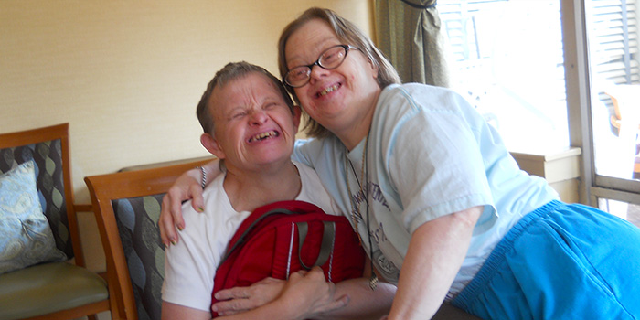

THE FUTURE OF DOWN SYNDROME
Current Focus
Currently, scientists have accepted that Down Syndrome is not preventable - Since it is a chromosomal disorder, it is not confined to one region of the body, and is present in every cell of the body. In other words, by the time Down Syndrome is diagnosed, it’s too late to prevent it. As a result, researchers have focused on improving the quality of life of those with Down Syndrome, as well as minimizing the effects of the other diseases that may affect them (Diagnosis & Treatment, n.d.). Note that INCLUDE (INvestigation of Concurring conditions across the Lifespan to Understand Down syndromE) played a big part in the following innovations and ideas to be discussed. In summary, rather than trying to completely change the effects of Down Syndrome, they try to help people to cope with it in the best way possible.
A Look into Medical Research - The Harmony TPV?
The Harmony Transcatheter Pulmonary Valve (TPV) is a less invasive method to treat patients with certain types of CHD, compared to open-heart surgery. Open heart surgery can be risky because it's very invasive (cutting to the patients heart and manually replacing valves), which can also scare some people away from getting the procedure.
Steps for Inserting a Harmony TPV:
- An artificial valve, made of self expanding fabric, is inserted into the circulatory system through a vein. Usually, a vein in the leg or neck is used.
- The valve is uses the vein as a transportation system, and is guided to the heart.
- When the valve reaches the correct place in the heart (depends on which valve is being replaced), knobs in the TPV are used to deploy the fabric.
The Harmony TPV a less invasive approach that comes with less risks, and may attract more patients that were previously scared of open-heart surgery. Once this is adapted for all forms of CHD, people with Down Syndrome and CHD will have easy access to heart therapy worldwide (Diagnosis & Treatment, n.d.).
Outlook for the Future
The life of expectancy of people with Down Syndrome - previously 10 years old in the 1900s - has increased to 60 years old (Diagnosis & Treatment, n.d.). A major reason for this is that people with Down Syndrome used to be institutionalized upon birth. Furthermore, they were also given no support when they had pneumonia, or other Down Syndrome-enhanced diseases. (Diagnosis & Treatment, n.d.). Based on this information, we know that improving their quality of life and providing medical support for byproduct illnesses can propel them to live a longer life, and further advances may improve this even more. For example, researchers have found that short chromosome 21 telomere length may be a marker for dementia in people with Down Syndrome - Dementia is currently one of the main factors keeping the life expectancy at age 60. In other words, researching short telomere length may be a beacon of hope for people with Down Syndrome, because if we were able to find a solution, this would allow individuals with Down Syndrome to live past age 60, and we can continue to push this boundary (Diagnosis & Treatment, n.d.).